Module 2: Quality Assurance¶
Learning Objectives
Use validation tools in JOSM
Use online validation tools
Contributing to OpenStreetMap is easy to learn, but difficult to master. Everybody makes mistakes, but the system works because even when one person does something the “wrong” way, there are always other mappers ready to help and fix errors. As you map more and more it will continue to get easier, and you will learn the “proper” way to do things. In this module we will take a look at the JOSM validation tool, which is an automated tool to search for errors and warnings in your data. We will also take a look at one of the online validation tools, which can aid us further in identifying mistakes on OSM.
1. Errors and warnings¶
Sometimes when you go to upload your edits in JOSM you get a pop-up window like this:
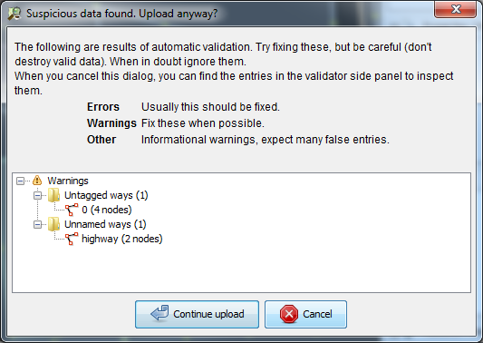This is JOSM’s way of telling you that there is suspicious data and that you might want to review the errors and warnings before uploading to OSM.
JOSM comes with a tool that does an automated analysis of possible mistakes. This is useful for finding errors that you may have overlooked. When you run the validation tool, it returns two lists of problems:
Errors: These are important to fix, and therefore usually you should not ignore these. Examples of errors include duplicated objects or overlapping lines and polygons.
Warnings: These are problems that are important to fix, but in some cases, they are tolerable.
One thing to note is that if you download a large area of the map and run the validation tool, you may get a very long list of errors and warnings. This is because the validation tool works on the whole map, not only the changes that you have made. You may see mistakes that other mappers have made, and you can fix them, or ignore them. The validation tool gives you the opportunity to look at the mistakes one by one.
2. Using the validation tool¶
Let’s see how to use the validation tool:
In JOSM, download a section of the map. If you don’t see the Validation Results window in the right panel, click on the blue checkmark on the left to show it.
Ensure that nothing on the map is selected. If you run the validation tool with anything selected, it will only validate what you have selected, and not the whole map. Hover your mouse in the validation window and click Validation.
The map will change and any warnings will be circled in yellow, errors in red. In the Validation Results window you will see a list of warnings and errors, if there are any.
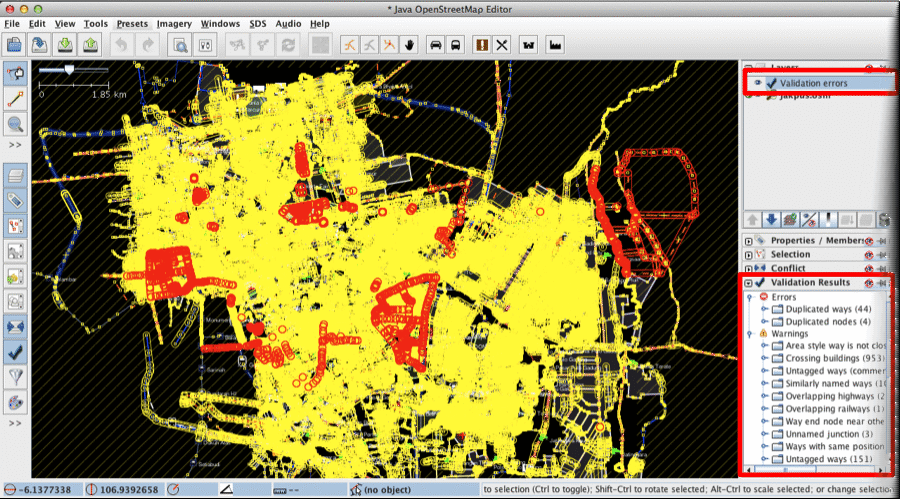Errors should almost always be fixed. Zoom to an error by right-clicking on it in the window and selecting Zoom to Problem. Then fix the mistake manually.
Some errors can be automatically fixed, such as “Duplicated nodes” errors. Click on the folder for these types of errors and click the Fix button in the window. Many errors, however, need to be corrected manually.
Usually there are many more warnings than errors. By giving you a warning, JOSM is telling you that it is probably a mistake, but not always. Use your judgement to see if it is an important error or not.
If you select a warning from the list and decide that it is not a problem, click Ignore and it will be removed from the list.
Re-run the validation tool at any time by clicking the Validation button.
3. Common validation warnings¶
Ways that are not closed¶
This is usually a line that does not form a polygon. Common examples are buildings where the first node does not meet the last node.
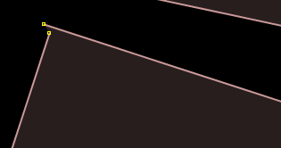To fix this, select both nodes and go to to connect them.
Crossing buildings (overlapping buildings)¶
This means that buildings are overlapping each other.
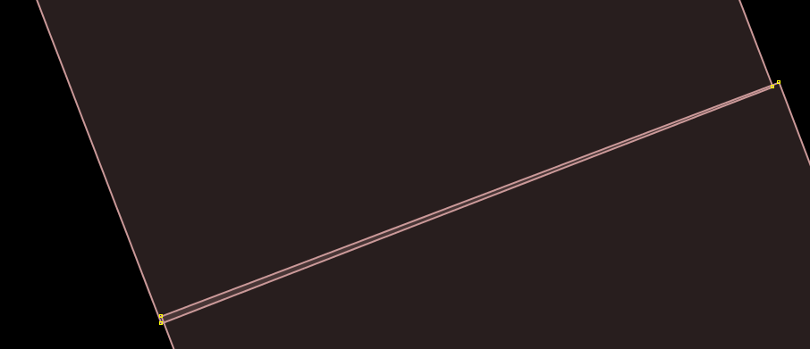To fix this, move the nodes of one of the buildings outside of the other building. It is possible for two buildings to share nodes, if the buildings share a common wall. But two buildings cannot overlap with one another.
Untagged nodes or ways¶
If someone draws a point or a line but forgets to give it any tags, then it is useless, because it does not mean anything.
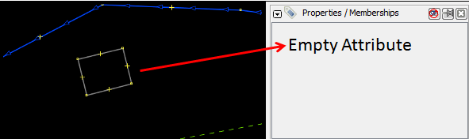To fix this, apply tags to the object to identify it, or delete it if it is a mistake.
End node near another way¶
If a line ends very close to another line but does not connect, this raises a warning.
Many times this warning is not important, but it helps to find road intersections that are supposed to connect but do not.
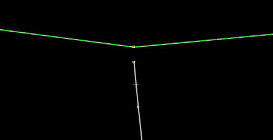Crossing ways¶
Lines that cross other lines without being connected will raise warnings. Many times this is not a problem, because the crossing ways are intentional - such as in the case of bridges, or streets and rivers that cross landuse polygons. However, it is sometimes helpful to find errors.
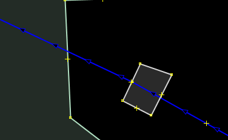OSM depends on people correcting and editing mistakes. Editing and validating data is important for improving maps. If you do not have time to get in the field with a GPS or trace imagery, validating objects and attribute data is a good way to contribute.
4. Using the tasking manager¶
The OSM Tasking Manager is a tool that mappers can use to sort an area into a grid, and work together to map in an organised way. Apart from being more organised, the tasking manager is also one way to avoid editing conflicts, because it helps prevent more than one person from editing the same area at the same time.
One consistent challenge is coordinating field and/or remote workers to map an area together. To help address this, HOT has developed the Tasking Manager to make it easier for administrators to define the areas of mapping interest and to delegate workers. The idea behind this tool is that if there is an area, let’s say a city, that we want to map, we can coordinate between people mapping on the ground and others mapping remotely with satellite imagery, This tool allows us to create a grid of the entire area. Collaborators select blocks in the grid that they plan to map, and when they finish, they mark the area as complete. In this way a team of many people can coordinate to map the entire grid.
To see how the tasking manager works, let’s take a closer look.
Open your internet browser and go here. You will see a page like this:
Click login to OpenStreetMap.
Here you must agree to allow this application some access to your OSM account. To do so, click Save Changes.
On the left is a list of current mapping tasks. These are different places in the world that people are coordinating to map.
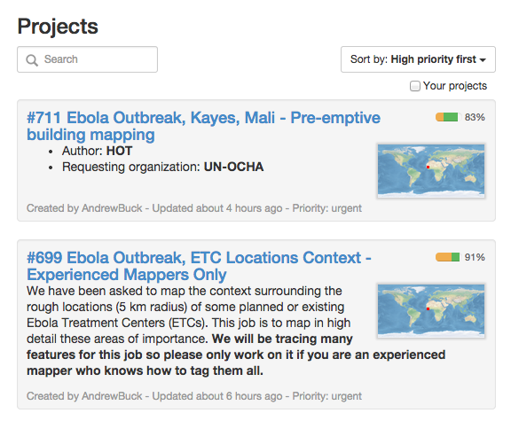Click on one of the projects to see more information about it.
This page shows you everything you need to know about the project. On the left side of the page is a description of the mapping project and how it is being organised. You can click on the different tabs to get more information. On the right side is a grid showing the area to be mapped. Red grid squares have been completed, green squares have been completed and checked by another person, and the remaining squares still need to be mapped or are being worked on.
Click on the Activity tab to see activity for this task. The Stats tab shows various users and their contributions.
To claim a grid square to work on yourself, click Start contributing on the Instructions tab, or simply click an unclaimed square on the map and then click Start mapping.
Next you see a view of the square that you have chosen to map. Click the button on the left to open the area up for editing with JOSM, iD, Potlatch 2 or create a Field Paper.
If you plan to edit with JOSM, you need to enable the JOSM remote control before you are able to launch the application from the Tasking Manager. To do this, open JOSM and go the menu. Click on the Remote Settings tab and check the box next to Enable remote control. Restart JOSM.
Return to the Tasking Manager and choose Edit with JOSM. If you have JOSM open and you correctly enabled the remote control, the grid area of the map you selected will automatically be loaded into JOSM.
Next you may edit the area using the instructions provided in the project information. Usually tasks will be to trace certain features using imagery, such as buildings and roads. Alternatively, tasks might be set to map in more detail on the ground.
When you are finished you will upload your edits and then return to the Tasking Manager to add a comment about your work. If you finish the grid square, click Mark task as done.
If you are unable to complete the task, click Unlock to make the task available again for other mappers.
When you finish an area, the grid square will turn yellow on the map to indicate that it is done. Someone else will then look at your work to make sure it is good, and if they agree that you’ve completed the square well, the grid square will turn green, meaning it is complete!
5. Editing tips¶
In this section we will go over some common mistakes in JOSM and provide some editing tips for making your maps great!
Some objects should not connect¶
When you are creating polygons and lines that are not supposed to be connected, make sure that they are not merged together by sharing a node. For example, highway nodes should not be snapped to buildings, because no one likes a road that leads directly into a wall! If you want to disentangle two or more obejcts that share the same node, select the node and press G.
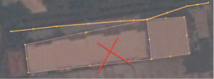 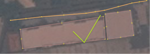But, some objects should connect¶
However, some objects SHOULD connect! Road intersections should always be snapped together. If two roads do not share a common node, then the computer has no way of knowing that the roads actually connect to each other.
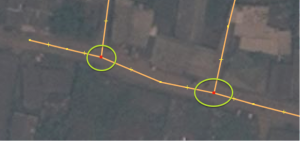Overlapping objects¶
A common error is to have overlapping polygons when the objects they represent do not overlap in real life. A building cannot overlap another building. This mistake is commonly made with buildings and landuse polygons. For example, a polygon drawn to represent a park outside a building should not overlap with the building. Instead it should be drawn next to the building. There are some exceptions to this rule, such as schools. Within a school yard you might identify individual buildings using polygons, yet you also might want to create a polygon around the entire school yard. In this case it is fine for the polygons to overlap, but the rule to follow here is to make sure that the buildings are completely inside the landuse polygon.
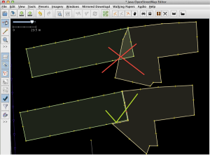 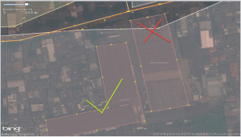We all make mistakes, and as you map more you will make less mistakes! Just remember that even if you upload data that contains mistakes, it is simple to fix your mistakes and upload the change again. This is what is great about OSM, you can always make it better!
6. Presets standardisation¶
OSM is used around the world by speakers of many different languages. Any feature in OSM can have whatever tags users choose. While this provides a lot of flexibility, it is important that users worldwide agree on the same tags to identify the same objects no matter what country they are located in.
For such purposes of standardisation, most tags in OSM are in British English. An extensive list of standardised OSM tags is available on the OSM Wiki Map Features page.
When users enter tags manually in JOSM or another editor, it is common to make spelling or other mistakes, particularly for beginners. For this reason, it is a good idea to use the presets menu, which uses forms that prevent incorrect tags from being entered.
Using standardised tags aids in:
Assuring data consistency and stability
Easier data search and analysis
Setting benchmarks for improvement
Data validation
Map rendering on OSM website
7. KeepRight¶
The KeepRight website is another useful validation tool for OSM. Open your web browser and head to http://keepright.at.
If needed, switch the site into Indonesian by choosing id from the drop-down box in the in the upper right.
Click Data Checks for Asia to check OSM data in Asia. This will open up a slippy map with errors displayed on it.
Navigate to your area of interest by using the zoom and pan functions.
The types of errors are listed to the left of the map. Get more details about each error by clicking on the icons which hover above the map.
When you see an error in your area of interest, the next step is to fix it. Click on the links to one of the editors (JOSM, Potlatch, or iD) to open this data in the editor. Note that to edit in JOSM you must have the JOSM Remote Control Enabled (as described in the Tasking Manager section above).
Note
We recommend that the editing is done in JOSM, because its editing features are more complete. Note that JOSM must be open (with remote control enabled) in order to connect with the KeepRight website.
Use JOSM (or another editor) to fix the errors that you find on the KeepRight website. After fixing them, return to the site and select ignore temporarily. Add a comment and click save.